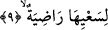
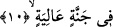
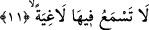

9. (Dünyadaki) çabalarından hoşnut olmuşlardır,
Yani bu yüzler dünyada işlemiş olduğu amelden şimdi yaptıklarının semeresini, güzel
âkıbetini gördükleri için hoşnutturlar. Âyetin başındaki lam hoşnud anlamına gelen
“radıye” kelimesine bağlıdır. Âyeti takdir edecek olursak: Yüzler vardır o gün
amelinden hoşnuttur demek olur. Burada ma’mülün zayıf, amilden önce getirilmesi
dolayısıyla ma’mülün başına amilin âmelini güçlendirmek için “lam” harfi cerri
getirilmiştir. Bu lam harf-i cerrinin sebeb bildiren lam olması da mümkündür. Bu
takdirde âyetin mânâsı şöyle olur: Yüzler vardır o gün Allah’a itâat uğrunda çalışıp,
çabaladığı için şimdi onun karşılığından ve sevabından hoşnuttur. Burada ifâde
buyurulan çalışıp, çabalama kavramına tasavvuftaki riyazatlar nefis mücahedeleri ve
halvetler dâhildir.
10. bir Cennettedirler.
O yüzler yüksek bir Cennettedirler veya bulunduğu mahal yüksek olan bir Cennette
kalmaktadırlar. Çünkü cennetler göklerin en üst tabakasının üstündedirler. Nitekim
cehennemler de yedi kat yerin altındadırlar. Öte yandan Cennetin dereceleri birbirinden
farklıdır kimi kiminden daha yüksektir. Cennetin bir derecesiyle diğeri arasındaki fark
gökle yeryüzü arasındaki mesâfe gibidir. Şu halde yukarda okuduğumuz âyetteki
“yükseklik” mekan açısından yükseklik olmuş olur. Bir hadis-i şerifte bunun izlerini
görebiliyoruz. Peygamber (s.a.) Efendimiz şöyle buyuruyor: “Allah için birbirlerini
sevenler Cennette öylesine yüksek odalara konulacaklardır ki diğer cennetlikler
onlara yeryüzündeki insanların aşağıdan yukarıya doğru gökteki yıldızlara baktıkları
gibi bakacaklardır” [84]
Âyette geçen “yüksek” kelimesini mekanca değil de değerce yüksek şeklinde anlamak
da mümkündür. Bu takdirde yükseklik kadir ve şerefte yükseklik olmuş olur. Böylece o
Cennetin içindeki nimet daha mükemmel olmuş olur.
Bu son âyette yüksek manevi makamlara işâret vardır çünkü o makamlar vicahet
ehlinin makamlarıdırlar. Manevi şerefe ancak temennî eden ve bunun dâvâsı peşinde
koşanlar erebilirler.